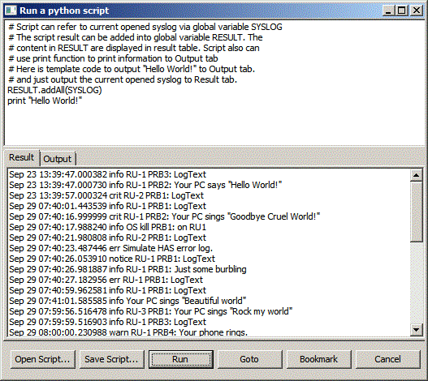

Introduction to UI
User can input a "search string" in the combo box where in the toolbar. In this picture, the "search string" is "RU-1".
Below the toolbar is a tab, the tab title is the syslog file name which user opened.
The syslog items are displayed in a table. User can resize the each column to a proper size to read the log.
The table contains those fields (list from left to right)
- The first column indicates the bookmark. User can double click on
the log items to toggle the bookmark. Or user can mark bookmarks in
find result (refer to Find.. chapter for the details.) User also can
mark bookmarks in the result fo running a python script for the details). In the picture, user bookmarked item 4 and 8.
- The second column indicates the line number of each log item in syslog.
- "TimeStamp" indicates the when the syslog is written. To save the
display space, the date information (for example: Oct 9) are not
displayed.
- "Severity" indicates the severity field.
- "RU" indicates the RU field.
- "PRB" indciates the PRB field.
- "Text" indicates the log text filed. User can copy part of text to clipboard.
(Note: if the syslog item is wriiten by system or FP, the column "RU" and "PRB" are empty.)
User can copy the selected log items by Ctrl+C to clipboard. And user can select multi-items in the table.
Menus
In File Menu.
User can open a syslog by click "Open" item.
User can close the application by click "Close" item
In Search Menu
"Find..." User can refer to
Find chapter for the details
"Find Prev" User can jump to the previous location of the "search
string". If the begin point of syslog is met, the search is continued
from the end of the syslog.
"Find Next" User can jump to the next location of the "search
string". If the end point of syslog is met, the search is continued
from the begin of the
syslog.
"Prev Bookmark" User can jump to the previous location of the bookmark. If the end point of
syslog is met, the search is continued from the begin of the
syslog.
"Next Bookmark" User can jump to the next location of the bookmark. If the end point of
syslog is met, the search is continued from the begin of the
syslog.
Toolbar
The functions of button of toolbar are listed from left to right:
- User can open a syslog by clicking the first button. Due to
syslog is often big and the application isn't optimized, to avoid the
unexpected crash, the first version of this application only allow user
to only open a syslog. After the user open a syslog, this button is
disabled. User need to run another instance of this application to open another syslog.
- This "save" button isn't functioal, due to this application is readonly. This button is added by eclipse wizard :-)
- User can enter a string to search which log items contain this
string. The combobox can save 10 history "search string". User can
select each of those history "seach string".
- Refer to "Find Prev" in menu chapter for the details.
- Refer to "Find Next" in menu chapter for the details.
- Refer to "Find..." chapter for the details.
- Refer to "Prev Bookmark" in menu chapter for the details.
- Refer to "Next Bookmark" in menu chapter for the details.
- Refer to "running a python script" chapter for the details.
Find...
If the user input "RU-1" in the combo
box in the toolbar, then press the "find..." in the meun or toolbar.
The "Find Result" dialog pops up:
The "Find Result" dialog is resizable. The log items that contains
"RU-1" are listed in the list. User can select one or multiple log
items. User can perform those functions by clicks the buttons on the
bottom (list for left to right):
- "Go to" button: Close the dialog and jump to first item that user selected.
- "Clipboard" button: Copy the selected items to clipboard.
- "Bookmark" button: Close the dialog and mark the log items that user selected.
- "Bookmark All" button: Close the dialog and bookmark all the find results.
- "Cancel" button: Close the dialog and do nothing.
Running a python script
User can run a python script by click button in toolbar. This dialog pops up:

In the upper textbox, user can enter a python script or edit the
default script. User can refer to "How to write a runnable python
script" sub-chapter.
User can press "Open Script..." to open a pre-written python script on the disk.
User can press "Run" button to run the python script which
displayed in the textbox. The result of the script is listed in
"Result" tab, and the output (which is strings that python script print
via "Print" statement) is displayed in "Output" tab.
User can copy the selected log items to clipboard by clicking "Clipboard" button.
User can close the dialog and bookmark selected log items by clicking "Bookmark" button.
How to write a runnable python script
To make application simple, the editing for a complex python script isn't provided.
But user can edit a python in a the PyDev or Jython GUI.
Application using the Jython as python script interpretor, the default
application package has included the Jython, so you needed to install
the Jython to sun the python script in the application. But if you want
to develop a powerful python script which can parse the syslog, you'd
better install a Jython and PyDev and ask me to get jar file that
support the parse the syslog file. (Due to there is no much user yet,
the help doesn't contains the information on how to setup script
development environment.) This charpter only introduce what
functionalities that global variable SYSLOG contains.
Further Development idea